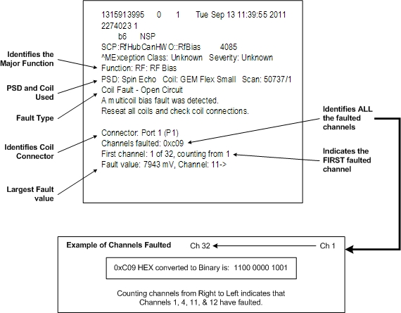
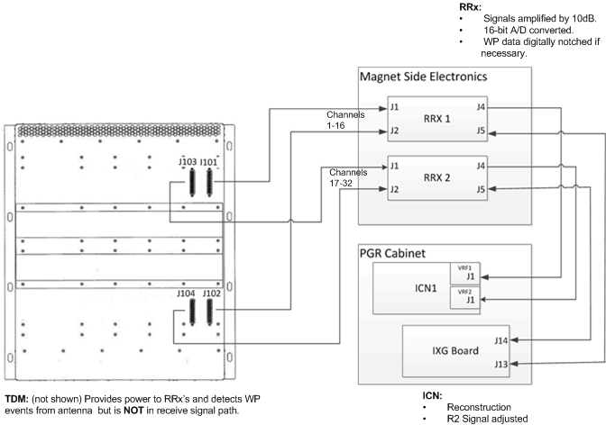
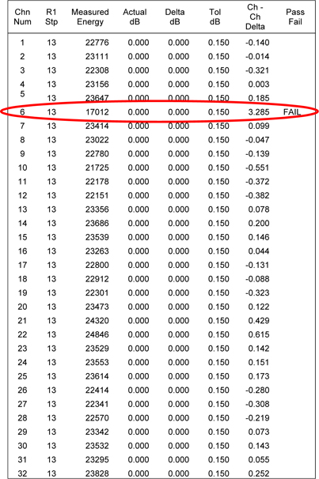
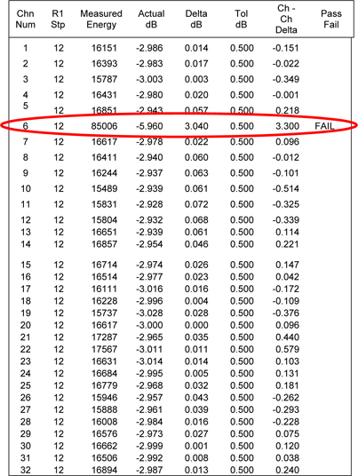

- 00000018WIA30A79F20GYZ
- id_131063651.5
- Nov 8, 2022 6:39:33 PM
Receive Chain Troubleshooting (RRX)
Receive Chain Faults
A typical receive chain fault looks like the following example.

-
Use the multicoil bias tool to confirm faulted channels. (Troubleshooting > Diagnostics > Hardware Location > Magnet Room)
-
Use the coil datapath diagnostic (CDD), which uses the MCRv tool to isolate receive chain components. (Troubleshooting > Diagnostics > Hardware Location > Magnet Room)
-
Use MCQA to identify coil image quality issues.
Available Receive Chain Diagnostics

|
Depending on the fault troubleshooting, use the appropriate diagnostics to help isolate the root cause. Note:
In addition to Diagnostics, the proprietary extended error message visible from the GE System Log located under the CSD Error Log tab will also help with isolating the issue. Often, the problem can be isolated by performing an action, performing a TPS Reset, and then checking system error log for changes in message content. |
RF Hub Front View
|
Inside RFSB:
Inside MCDB:
Inside RFCB:
Inside PDBv:
|

|
RF Hub Rear View and Connections

Example of a Bad Channel
Symptom: Poor image quality or low SNR using 8 HR brain coil
Scanning a phantom in GESERVICE Mode – using the saveinter CV to view all intermediate images as well as the combined image (9 images in total) – indicates that image 4 has no (or little) signal.
The 8 HR brain coil uses the legacy A-port connector. On a system that does not have a reroute box, this connector connects directly to the RFSB in slot 13.
-
Use the MCRv tool to decide if the coil or receive chain is suspect. If the MCRv tool is not readily available, use another 8 channel coil that uses the A-port.
-
If you have decided that the coil is good, and the issue is somewhere within the receive chain:
-
Swap both cables (J1 and J2) between receiver 1 and receiver 2.
-
Re-scan the 8 HR brain coil using the saveinter CV.
-
-
If the failing image now is GOOD and all 8 intermediate images look good, suspect receiver 1.
-
If the failing image is still BAD, the receiver is good. Suspect the RFSB.
-
Swap RFSB1 with RFSB 2.
-
Re-scan the 8 HR brain coil using the saveinter CV.
-
-
If the failing image now is GOOD, all 8 intermediate images look good. Suspect the RFSB 1 board.
-
If the failing image is still BAD, call your support team member or OLC for additional help.
TPS Reset Fails Due to Receive Chain Loopback
During every TPS reset, the RRx chain runs a loopback test to calibrate each receive channel for each R1 setting.

The loopback test stores a log file in the /usr/g/service/log directory.
The log file is named r1GainCal_date.dat (for example, r1GainCal_2011Sep14_12_28_42.dat).
For each R1 value, for each channel, the measured energy drops by 3db ± 0.5db. If a channel falls outside the tolerance, the pass/fail column will indicate fail for that channel. No entry indicates pass.

The log file continues to R1 value = 1.
Example:
Review the loopback cal file:
-
Open a C-shell.
-
Type ls –altr r1Gain*.
This command will list all of the R1GainCal files with the most current file shown on the last line.
-
Display the contents of the log file (use more, gedit, or view to display the contents of the file).
Diagnosing the Issue:
-
The example file above shows channel 6 fails for both R1 of 13 and R12. (In this case, channel 6 fails for all R1 values. The remainder of the log file is not shown.)
-
During R1GainCal loopback, the same exciter signal is distributed across all channels. Having only one channel fail suggests the exciter is NOT the issue.
-
Because the RFSB is responsible for setting correct R1 values, the RFSB would be suspect. However, it is best to run diagnostics and follow the same troubleshooting steps shown in Example of a Bad Channel to confirm.
Intermittent Multicoil Bias Faults
If the system is experiencing intermittent multicoil bias faults, try running a scan with and without RF enabled to see if there is any difference. Noise may be entering the bias lines (possibly from a loose quick disconnect).